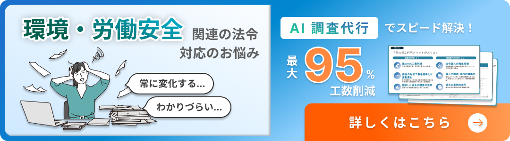

私たちは、生産現場において、設備や機械のレイアウト、加工方法の検討、自動化の工夫、治工具の改良、搬送方法の検討や仕掛品の適正化などにより、ムダを徹底的に排除し、効率の良い生産をするために多くの努力を払っていると思います。その中で、「人」の動きを中心として、「機械」と「モノ」を最も有効的に組み合わせる作業のやり方を追求するのは至極当然のことです。
決められた時間内に各作業者が効率よく仕事が出来るように、「作業の順序」と「作業量」、そして、「作業方法」を決め、作業を行う上で、最も基本になるモノを定義します。これが業務標準化の考え方です。生産現場以外でも間接員が行う業務についても手順を決めて、効率化を図ることもあります。また、業務標準化とは、「業務効率・業務品質・安全性等を総合的に踏まえ、最適な業務手順（＝標準手順）を組織的に決め、その業務手順を徹底させること」と言われたりします。
今回はこの業務標準化を行うことで、どのように業務効率化が出来るかということを考えていきたいと思います。
エイトスでは、提案活動を活性化させる方法や、従業員が自律的に動ける組織文化を作る支援をしています。無料でのご相談をしておりますので、是非一度ご連絡ください。
またサービス資料請求はこちらからお願いいたします。
さらに改善のDX化についてのノウハウや最新情報をメルマガで定期配信しているので、ぜひ下記URLからご登録お願い致します。https://mail.salesdiv.jp/bm/p/f/tf.php?id=eitoss0920&task=regist
業務標準化の必要性
業務の標準化の意味はご理解出来たかと思います。それでは、なぜ業務標準化が必要なのでしょうか。
業務標準化の必要性については、次の6点が挙げられます。
①作業の順序や方法を決めておかなければ、各人が自分勝手な順序や方法で作業することになり、作業のバラツキが出てムダを発生させ、あるいは、品質トラブル(工程とばしや不良品を製造してしまう、欠品を作ってしまうなど)や、機械の破損、安全の問題も発生しかねない。
②もし、作業結果に異常があった場合、原因の追従が容易に出来る為、問題の顕在化につながりやすく、改善の手がかりとすることができる。また、標準化された作業通り(標準作業と呼ぶ)に作業をして、異常が発生したのであれば、その標準作業を確認すれば、その問題の発生原因を掴むことが出来、再発防止に繋げることが出来るが、標準作業を守らない場合は、その原因の追及に多くの時間と労力を費やすことが多い。
③「作業はこのようにして行うべき」という監督者や組織の思いや意思を反映させることが出来る。
④監督者は多くの部下を持っており、その部下一人ひとりに与えた作業を全て覚えているというのは非常に難しいと考えられる。まして、管理者にとっては不可能に近く、組織として、各人がどのような業務を行っているのかは一目ではわかりにくいことが多い。そこで、標準作業を明記した帳票類があれば、それを見ることで、作業者が指示された通り、正しく作業を行っているかどうかを確認することが出来るようになる。いわゆる、「目で見る管理」が出来るようになる。
⑤新入社員やローテーション(生産現場においては多能工化など)により、新人が作業に付く場合の指導にも繋がり、短時間で業務を覚えてもらうことが可能となる。
⑥監督者が変わった場合、業務を標準化しておくことで、従来培ってきたノウハウをそのまま受け継ぐことが出来、引き継ぎに伴う技術レベルの低下を防ぐことが可能になる。また、それを土台にさらなる改善も可能となる。
業務の標準化の必要性について一般的な考え方を述べました。これらについては、どこの会社、どこの部署においてもこれに類したものがありますが、標準化を明示していないケースが目立ちますので、今回、皆様のところでも標準化をされることを推奨します。
業務標準化と監督者
生産現場における「業務の標準化」は一般的には第三者である技術員が作業を測定し、その結果に基づいて作成しているケースが多いですが、現場の監督者(係長、作業長、副作業長)自身が設定するのが原則となっています。 それでは、その標準作業に基づく作業の進め方と監督者の役割はどのようなものなのでしょうか。
監督者は作業者に標準作業の順守を徹底することが大切です。どんなに立派な標準作業でも、作業者がこれを守らなければ工程の安定はなく。監督者は不良対策や、トラブルシューティングなどに奔走しなければならなくなり、多くのムダを造り出すことに繋がりかねません。
また、作業者に標準作業を理解させて守らせるためには、作業者が納得するまで十分教え込むことが必要です。そして、標準作業を守らなければならない理由を十分説明し、守らなかった場合はどうなるかを具体的に理解させる必要があります。作業者が良い製品を作るのだという意欲や、品質に対する責任を持たせるなど、精神面の啓発を行わなければなりません。
監督者は標準作業実施の結果を確認し、異常については徹底的な原因追及と適切な処置を講じなければなりません。また、標準作業が守られていて異常が発生した場合は、徹底して、その原因を追及しなければなりません。その結果、標準作業自体に、不備な点があることが分かったら、速やかに修正し、修正内容や理由を全員に徹底することが大切です。
一方、標準作業が守られなかった場合は、守られなかった原因を追及し、その上で誰にでも守ることが出来る標準に変更しなければ成りません。また、監督者は作業者が標準作業どおりに作業しているか、絶えず、現場を巡回し、確認し、実態を掴み、その場で作業のやり方について実地指導を行うことが肝要です。
今ある標準は、ムダで埋まっていて問題だらけであると、いつも思い、常に改善により新しい標準作業を生んでいく必要があります。世の中は常に進歩し続けており、そして、新しい方法が次から次へと生まれています。その流れに追従するだけでは現状維持に留まっていることになります。従いまして、標準作業がいつまでたっても変わらないような職場や、改善をし尽くしたと思い、現状維持で十分満足し問題がないと思っているような職場があるとスレは、それは相対的に退歩となってしまいます。
監督者は、出来ない理由を探したり、考えるのではなく、常に前向きに改善を行い、標準作業の改定をしていくことが任務であると言えましょう。
エイトスでは、提案活動を活性化させる方法や、従業員が自律的に動ける組織文化を作る支援をしています。無料でのご相談をしておりますので、是非一度ご連絡ください。
さらに改善のDX化についてのノウハウや最新情報をメルマガで定期配信しているので、ぜひ下記URLからご登録お願い致します。https://mail.salesdiv.jp/bm/p/f/tf.php?id=eitoss0920&task=regist
標準作業の作成
標準作業を作るにあたり、①標準作業の三要素、と、②標準作業の3点セット、と呼ばれるものがあります。これらについてご説明します。
①標準作業の三要素
標準作業の三要素というのは、標準作業を行う際に、必要な要素で、「タクトタイム」、「作業順序」、「標準手持ち」のことであり、このうちいずれかが欠けても標準作業は成り立ちません。
■タクトタイム
「タクトタイム」というのは、1個を何分何秒で作らなければならないかという時間のことで、これは生産数量(必要数)と稼働時間によって決まります。
タクトタイム＝ 稼働時間 1日(又は1個)辺りの必要数
※稼働時間：定時間(1直8時間)
タクトタイムが決まると、その時間内に仕事が出来るように各人作業量を決めますが、この場合の仕事の速さ、熟練度などの標準は、監督者自身が設定します。なお、このように決めても作業者により個人差が出てくるため、タクトタイムからはみ出す場合は、タクトタイム内に入るようにする改善が必要になります。
■作業順序
「作業順序」と言うのは、作業者がモノを加工する場合に、材料から製品へと次第に変化していく過程を指します。モノを運び、機械に取り付けを行い、取り外したりし、時間経過と共に作業をしていく順序で有り、必ずしも製品が流れていく順序ではありません。工程とは逆の順序で作業する場合もあります。この作業順序が明確になっていないと、各人が自分の好き勝手な順序に従い作業をしてしまうことで、人によっても、又、同じ人が作業をしたとしてもその都度順序が異なってしまうことが多く、その結果、作業時間にバラツキを生じ、ムダが発生してしまいます。
また、この作業順序を守らなければ、加工忘れ(工程とばし)などの品質不良や、取り付けミスなどによる機械の破損や安全上の問題を発生させかねません。
いずれにしても、作業順序は標準作業を作るときに、ムダ・ムリ・ムラのないように、結果として、安全に良いモノが早くできるモノでなければなりません。
■標準手持ち
「標準手持ち」とは、作業をしていくために、これだけは必要だという工程内の仕掛品のことを言います。(機械に取り付けているものも含めます。)
標準手持ちは、機械配置の方法によって、又、作業順序の決め方によっても変わってきますが、作業を進める上で、どこに何個の仕掛品がなければ決められた作業が成立しないと言うことから決まってきます。
標準手持ちは、一般的には同じ機械配置であっても、作業を加工工程の順位粗って行う場合には、それぞれの機械にとりついたものだけあれば良く、肯定感には手持ちを持つ必要はありません。しかし、工程の逆の順序で作業する場合には、各々の工程間に1個ずつ(2個付けの場合は2個ずつ)手持ちが必要になります。
なお、標準手持ちは、品質チェック上、あるいはワークの油切り、その他の理由により必要な場合は、それも含めることになります。
②標準作業の3点セット
標準作業を作成するに辺り、必要な帳票の中、「工程別能力表」、「標準作業組合せ票」、「標準作業票」の3点を標準作業の3点セットと呼んでいます。
■「工程別能力表」の作成
標準作業を作るには、先ず工程毎にその部品についての生産能力(加工能力)を把握する必要があります。これを算出するために、手作業時間(ハンドタイム)、機械の自動送り時間(マシンタイム)、付帯作業(刃具交換等)及び、段取り替え時間を記入できるようにした表が工程別能力表です。
これは標準作業を作成する場合の、「作業の組合せ」をする基準となるものであり、技術員が作成する。
■「標準作業組合せ票」の作成
各工程の手作業時間及び歩行時間を明らかにし、タクトタイム内で一人がどのような順序で、どれだけの範囲の工程を受け持つことが出来るかを検討するものである。また、自動送り時間を記入して、人と、設備の組合せが可能かどうかを合わせてみます。
簡単なものであれば、工程能力表からそのまま作成することが出来ますが、少し複雑なものになると、作業順序を決めていく途中で、その機械は既に自動送りが終わっているかどうか分からなくなってしまう場合があります。そこで、この時間的な経過が分かるように作業順序を決める上での道具としての「標準作業組合せ票」を用い、監督者が作成します。
■「標準作業指導書」と「標準作業票」の作成
「標準作業指導書」は作業者毎の作業内容及び作業範囲を図示したモノで、1人分の作業についての機械配置を図示し、標準作業の三要素の他に、作業にムダ・ムリ・ムラのないよう、例えば、両手の使い方、足の位置、ワークのつかみ方などを明確にし、品質チェックをどこで、どのような方法で行うか、更に、安全の急所などを記入したもので、作業者の指導に使われます。通常、この中の機械配置図と、標準作業の三要素及び要点を記載したものが「標準作業票」といわれるもので、現場の対象ラインに掲示して使用されます。
これらの標準作業の三要素と、標準作業の3点セットを駆使して業務を標準化し、人によるバラつきを排除し、業務効率の向上させ、業務品質の向上・安定業務効率を高めていきましょう。業務標準化活動では、標準手順を決めたあと、アウトプットとして業務マニュアルが作成されることが多いです。しかしながら、いつしか業務マニュアルを作成すること自体が目的・ゴールとなっていることがよく見受けられます。標準手順を決めても、全員がその標準手順を遵守しなければ、効率は上がらないしミスも発生します。つまり、標準手順を決めることと合わせて、それを継続的に全員に守らせるマネジメント行う必要があるのです。そのためのツールの1つが業務マニュアルであり、全員に標準手順を徹底することができて業務標準化となると言うことを頭におき、業務標準化を進めていきましょう。
エイトスでは、提案活動を活性化させる方法や、従業員が自律的に動ける組織文化を作る支援をしています。無料でのご相談をしておりますので、是非一度ご連絡ください。
現場の業務改善を網羅的に確認する「改善チェックポイント100」を上記画像よりダウンロードが可能となっております。
さらに改善のDX化についてのノウハウや最新情報をメルマガで定期配信しているので、ぜひ下記URLからご登録お願い致します。https://mail.salesdiv.jp/bm/p/f/tf.php?id=eitoss0920&task=regist

← コラム一覧へ戻る